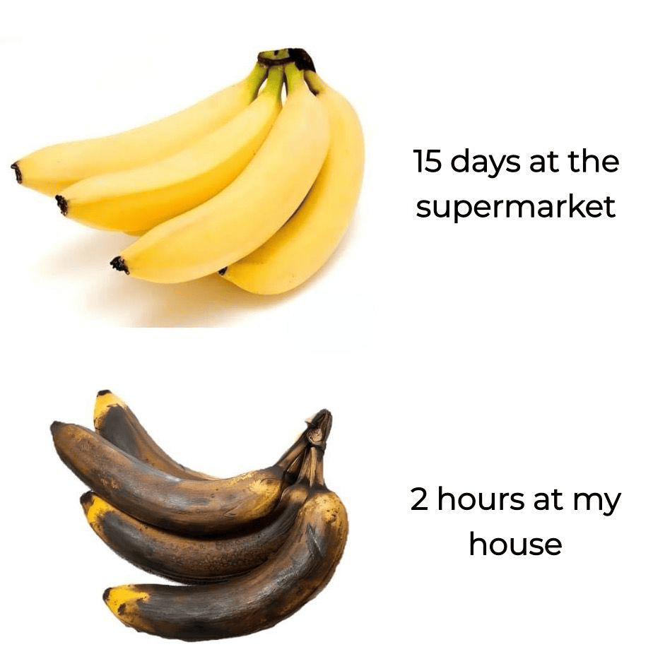

Fun Facts
- Bananas are technically berries. Weirdly, strawberries aren't. Biology is just making stuff up now.
- If you throw a banana into water, it floats. Turns out, bananas don’t like to sink.
- There are over a thousand types of bananas, but most of us only ever meet one. Feels a bit unfair.
- The kind you see in stores is called Cavendish. Sounds like it should come with a butler.
- Bananas grow on what looks like a tree, but surprise — it’s actually a giant herb. Nature’s prank.
- A banana plant can grow taller than your living room ceiling. It’s not messing around.
- If a mosquito bites you, rub a banana peel on it. It actually helps. No one knows why.
- Bananas carry a little mood boost in them. They’ve got stuff that helps you feel better, naturally.
- People in Uganda eat more bananas per person than anywhere else. They know what’s up.
- Bananas are about 75% water. So yes, you’re basically drinking when you eat one.
- If you put a banana next to an apple, it’ll ripen faster. The apple is basically peer pressuring it.
- You share about 60% of your DNA with a banana. That explains a lot, honestly.
- Banana peels can shine shoes. Which is pretty impressive for something most people throw away.
- India grows more bananas than any other country. If bananas had a capital, it’d probably be there.
- Bananas are slightly radioactive. Don’t worry, not enough to turn you into a superhero.
- The first bananas humans ever grew came from Southeast Asia. We’ve been into them for a while.
- At one point, bananas were the most exported fruit in the world. They basically ran the fruit industry.
- Once a banana plant gives you bananas, it dies. But don’t worry — it sends out a new shoot before it goes.
- In the U.S., bananas are the most eaten fruit. Take that, apples.
- Companies like Chiquita and Dole basically built banana empires. They made it a serious business.
- Bananas were brought to the Americas by Portuguese sailors. Thanks for that, I guess.
- The term “banana republic†originally had to do with actual bananas. History is strange like that.
- Monkeys peel bananas from the bottom, not the stem. They’ve clearly figured out the better way.
- The average banana has about 100 calories. Not bad for something that tastes like dessert.
- They’re packed with potassium and vitamin B6. Basically, bananas are low-key health kings.
- No fat, no cholesterol, no drama. Bananas are chill like that.
- People actually turn banana plants into fabric and paper. Bananas can be clothes. Wild.
- Bananas can help with heartburn. It’s like they’re trying to make up for how fast we eat them.
- In Japan, people sometimes eat the peels. No waste, just commitment.
- The word “banana†probably comes from an old word for “finger.†Makes sense when you look at one.
- Frozen bananas can be blended into ice cream. No dairy, no nonsense, just frozen banana magic.
- Banana plants grow little side shoots called suckers. They’re basically banana backups.
- Bananas are picked green and ripen later. They just need some time to figure themselves out.
- Banana peels can help with acne. Who needs skincare when you’ve got fruit?
- Run out of eggs? Mashed bananas can step in for baking. They’re team players like that.
- Banana plants grow, fruit, die, and repeat. It’s dramatic, but they get the job done.
- A bunch of bananas is called a “hand†and each banana is a “finger.†Makes it weirdly personal.
- The little black dots inside? Those are seeds. They’re not doing much, but they’re there.
- The more a banana ripens, the sweeter it gets. Like your nicest friend on a good day.
- Athletes love bananas. Easy to carry, easy to eat, full of energy. Basically fruit fuel.
- Bananas first hit U.S. grocery stores in the 1800s. Vintage fruit, in a way.
- Banana peels break down fast and feed your garden. Don’t toss them — compost them.
- The banana split was invented in Pennsylvania. Some genius decided one banana wasn’t enough.
- You can mash a banana into a face mask. It’s weird, but it feels kind of nice.
- The banana emoji gets used in... creative ways online. Let’s leave it at that.
- Some people are allergic to bananas. A tragedy, honestly.
- There’s an entire museum in California just for bananas. You can’t make this stuff up.
- In 2001, a guy robbed a bank using a banana. It wasn’t even peeled. That’s confidence.
- There’s a real Banana Day every April. You probably missed it, but it’ll come back around.
🕰️ Bananas Then and Now
Introduction
In the late 1800s, a penniless teenager named Sam saw ripe bananas as trash. He bought them cheap, raced across states in a boxcar, and sold them for a profit. His first win set the stage for today’s global banana trade.
The First Banana
Few Americans had tasted a banana back then. Sam learned every job in his uncle’s store so he knew what customers wanted. When he spotted that yellow fruit, he bet his savings on selling riped fruit fast. That moment created a new demand for bananas in supermarkets everywhere.
A Race Against Time
Without refrigeration, up to 15% of bananas spoiled at sea. Sam bought a train car, wired telegraphs to alert towns, and sold every banana before it turned black. Today’s cold chains and fast logistics still borrow from his fast-sell playbook.
Building an Empire
By 1903 Sam signed a deal with United Fruit to buy every ripe batch. He then bought ships, built plantations in Honduras and bribed officials to cut costs. That model of vertical control still echoes in modern agro-business, for better and worse.
Today’s Impact
Bananas remain one of the world’s top crops. Supply chains, fair-trade labels and disease-resistant varieties all trace back to Sam’s strategies. Next time you peel one for breakfast, you’re tasting a century of logistics, science and social change.
Banana Memes
Meme of the Day
“Banana Time Warp”
Supermarket bananas seem survive for weeks, but the moment they enter your home? Instant decay. Your kitchen is just a ripe zone.